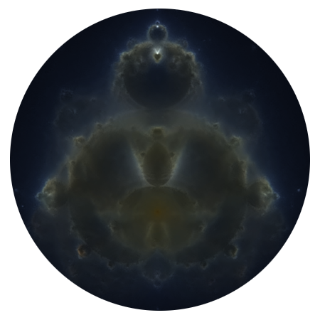
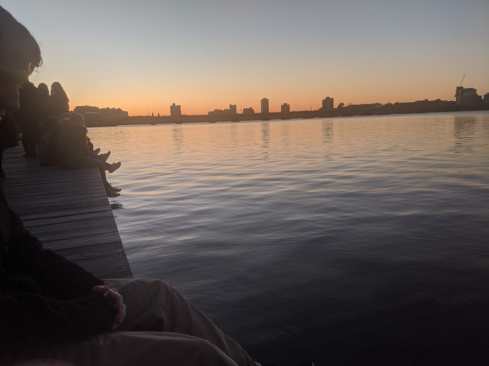

a great story has a beginning, middle & end
but not necessarily in that order
we are all great stories
- Phil Kaye
I'm Dan. I'm an undergrad at Stony Brook University studying math and physics. I do some nuclear physics research, write some open-source software, and do some math. Sometimes I write about one of those things, or a combination of them.
Some projects I've contributed to include manim, the animation engine by 3blue1brown for his videos, IVQ, an interactive video quiz tool designed for classes at Stony Brook, and some random robotics things.
I also help organize SBUHacks, play some music, and am the treasurer of the Stony Brook Math Club.
